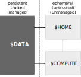

The new cluster

$DATA is our new data store, called HAMMERPANTS- ⮊
HAMMERPANTS hosts all of our large datasets
- ⮊ TODO: Link between cluster, hammerpants, JSC
- ⮊ In order to interact with
HAMMERPANTS, you will need DataLad
Research data flow
|
|
- Researchers are free to do whatever at $HOME (within limits)
- $COMPUTE pulls data (exclusively) from $DATA
- Results from $COMPUTE are immediately/eventually pushed back to $DATA
|
- Impact of ephemeral $HOME and $COMPUTE
-
- No limits to tinkering and exploration of data
- Anything that needs to scale requires researchers to use $COMPUTE and thereby $DATA
- Anything that is/was relevant for computation is tracked in $DATA
- The only trusted place for any data is $DATA, hence anything that could be important is there
Step 1: Log into the cluster
$ ssh user@juseless.inm7.de
Linux juseless 4.19.0-6-amd64 #1 SMP Debian 4.19.67-2+deb10u1 (2019-09-20) x86_64
IIIIIIIIIII NNNNNNN NNNNNN MMMMMMM MMMMMMM 7777777777777777
I:::::::::I N::::::N N::::N M::::::M M::::::M 7::::::::::::::7
III:::::III N:::::::N N::::N M:::::::M M:::::::M 777777777::::::7
I:::I N::::::::N N::::N M::::::::M M::::::::M 7:::::7
I:::I N::::NN:::N N::::N M::::MM:::M:::MM::::M 7:::::7
I:::I N::::N N:::NN::::N M::::M M:::::M M::::M 77777:::::777
I:::I N::::N N:::N::::N M::::M M:::M M::::M 7:::::::::::7
I:::I N::::N N:::::::N M::::M MMM M::::M 777:::::77777
I:::I N::::N N::::::N M::::M M::::M 7:::::7
III:::::III N::::N N:::::N M::::M M::::M 7:::::7
I:::::::::I N::::N N::::N M::::M M::::M 7:::::7
IIIIIIIIIII NNNNNN NNNNN MMMMMM MMMMMM 7777777
Last login: Thu Nov 21 10:46:34 2019 from 134.94.9.210
- Now you are in your
$HOME
Step X: Required configurations
TODO: annex.ria.remove.inm7-storage.base-path configuration?
TODO: YODA?
Step X: Create a dataset for your project...
... for data, analysis results, manuscripts, ...
$ datalad create -c inm7 myproject
TODO output of the command here
TODO: everyone needs to have their git configurations set up.
Step X: Install a dataset
$ datalad install --dataset myproject\
--source <ID/URL> \
mynewdataset/inputs/...
TODO: command output here
Step X: How to get data?
- TODO: reference datalad get, datalad run,
and in-script datalad/system calls
Step X: Back up results in HAMMERPANTS
$ datalad publish --to inm7
TODO command output here
publish anything computed/wrote to HAMMERPANTS to be backed up- ⮊ This pushes all changes you made to your dataset (history),
- ⮊ and transfers all data files
- ⮊ The dataset now exists in a homogenous, accessible, domain-agnostic
format that links its evolution to individual people, and all associated data files
- Find out more here:
- Chapter on a YODA project including
datalad publish
- Chapter on the dataset siblings
Step X: Staging datasets for HPC
TODO: maintenance scripts
Step X: Disk-space-aware data management in Datasets
- When your computations are done,
drop non-precious data to save disk space
- Input data is not precious!
- It is backed up in
HAMMERPANTS,
there is no need to keep a copy after you computed your analyses:
$ datalad drop inputs
TODO command output here